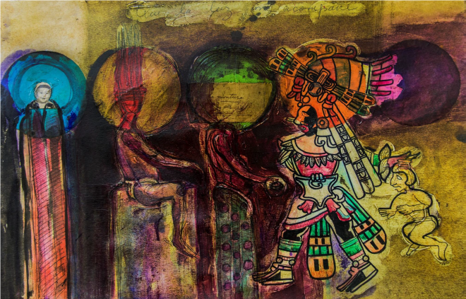
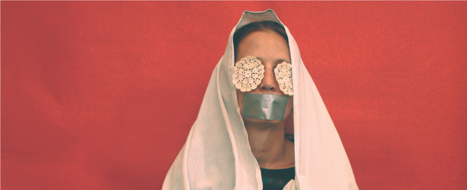
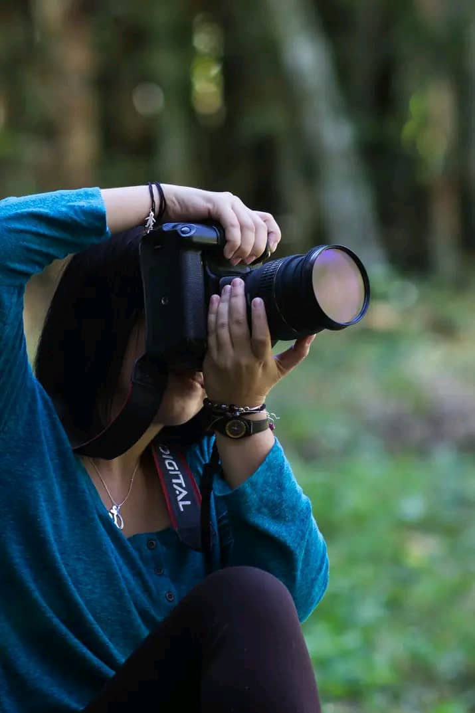
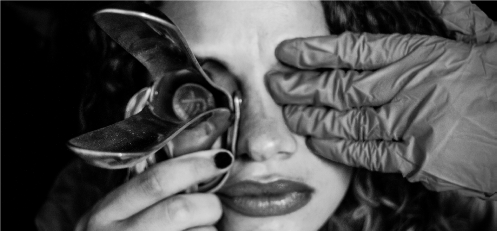
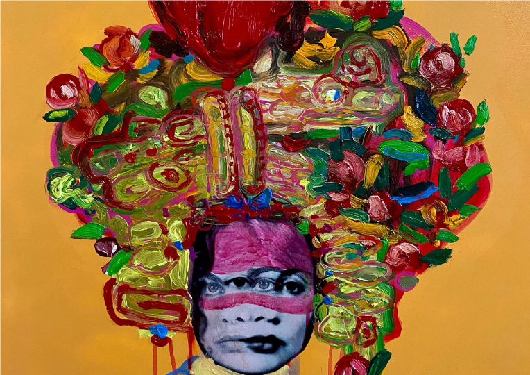
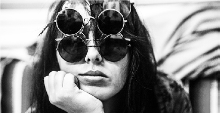

Restauración de Pintura
Intervención integral aplicando criterios arqueológicos y rigor histórico para devolver la integridad estética y física a las obras de arte.





Conservación y Restauración de Bienes Muebles

Licenciada por la Universidad de las Artes (ISA), Facultad de Artes Visuales. Especializada en la conservación de obras gráficas, murales y pintura de caballete. Su formación integra el rigor técnico del patrimonio cubano con una visión contemporánea adquirida en la Academia "Leopoldo Romañach".
Ha liderado proyectos de alto impacto internacional, destacando su participación en el Houston Latino Film Festival en Texas y la ejecución de murales de gran formato en el One Gallery Beachfront Art Resort. En este último, colaboró con figuras clave de la vanguardia latinoamericana como Natalia Gleo y Celso González.
Su obra personal ha sido reconocida en certámenes de prestigio mundial. Cuenta con el Premio al Mérito Fotográfico por la serie “Teoría de Murphy” (Black & White Magazine, California) y nominaciones en los Refocus Awards. Su práctica artística oscila entre la recuperación del pasado y la captura fotográfica del presente.
Cronología Detallada
Homenaje a Calma Carmona. Presentada en The Silos at Sawer Yard y como apertura del 8th Houston Latino Film Festival en The Match. Houston, TX, USA.
Exposición “Identidad con Telas” junto a Lesbia Vent Dumois, Zaida del Río y Flora Fong. Presentación de pasarelas con la vanguardia artística cubana. Santa Clara, Cuba.
En conjunto con Antonio Gómez Santiago. Galería Pórtico de la AHS, Santa Clara, Cuba.
Muestras colectivas en Salón Carlos Enriquez (Remedios) y Santa Clara.
Ejecución colectiva con referentes internacionales: @cobreart, @gleo_co, @angurria, @celsoart, entre otros. Cayo Santa María, Cuba.
Exposiciones de la vanguardia regional. Galería Provincial y Centro de Patrimonio Cultural, Santa Clara.
Serie “Teoría de Murphy” en Black & White Magazine (California, USA). Exposición personal “Heredades” en Galería Provincial.
Proyectos expositivos itinerantes y colectivos bajo el proyecto “Dentro del Juego”. Cuba.
Participación en proyectos colectivos de artes visuales. Santa Clara, Cuba.
Exposición “Identidad” con la obra fotográfica “Blasones Mutables”. Edificio de Arte Cubano, La Habana, Cuba.
Muestra personal en Biblioteca Manuel García Garófalo y colectiva “Antropolomnímodos”.
Equipo de conservación del Gabinete de Pinturas Españolas. Exposición permanente, Santa Clara, Cuba.
Salón Nacional AKDMIK 2012 con la propuesta visual “Álbumes a Relieve”.
Murales y lienzos en Centro Penitenciario Guamajal y Salón Provincial de Diseño.
Primeras muestras colectivas en la Casa de Cultura Juan Marinello, Santa Clara.
Servicios Técnicos & Puesta en Escena
Intervención integral aplicando criterios arqueológicos y rigor histórico para devolver la integridad estética y física a las obras de arte.
Tratamiento especializado de documentos históricos y material fotosensible, asegurando la estabilidad química del soporte y su legibilidad.
Evaluación técnica y control de factores ambientales para diseñar estrategias proactivas que logren mitigar el deterioro a largo plazo.
Registro técnico de procesos y fotografía de autor, capturando la esencia matérica y el valor histórico del bien cultural.